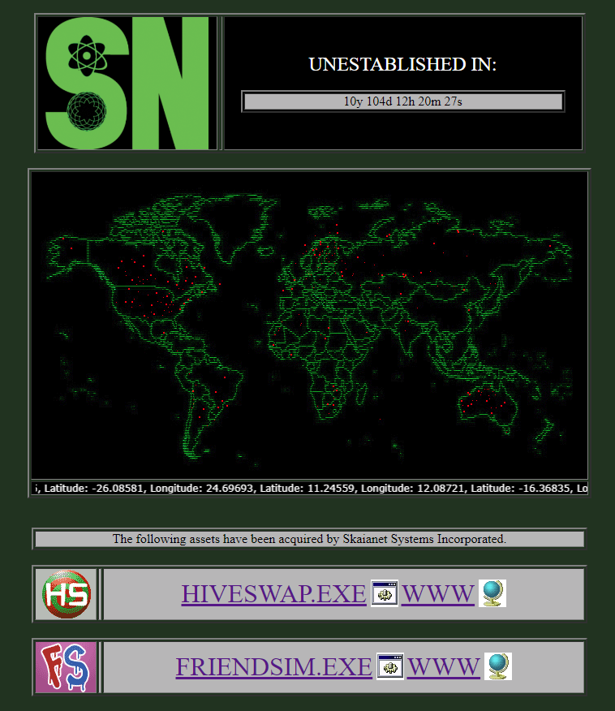
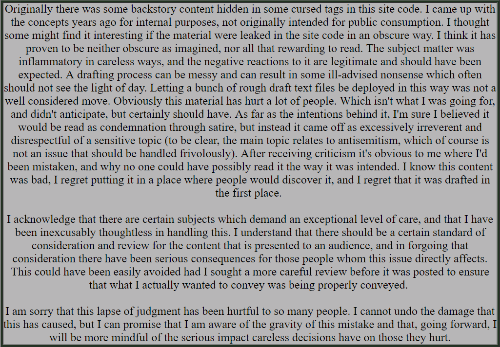
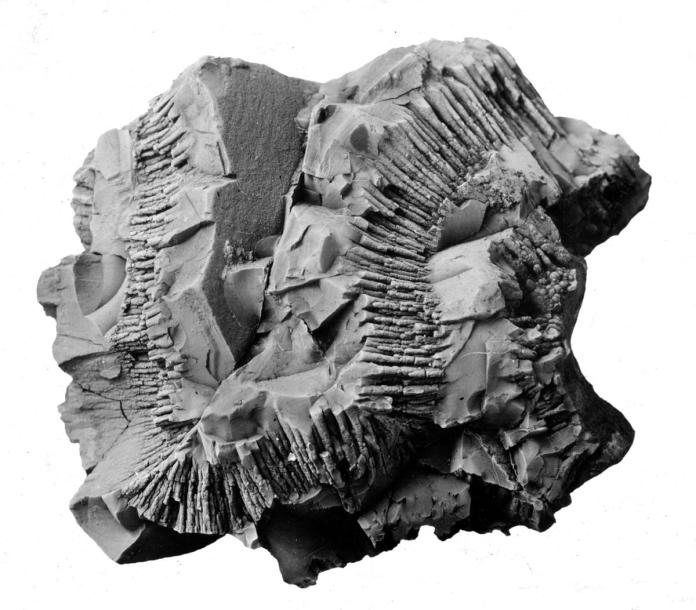
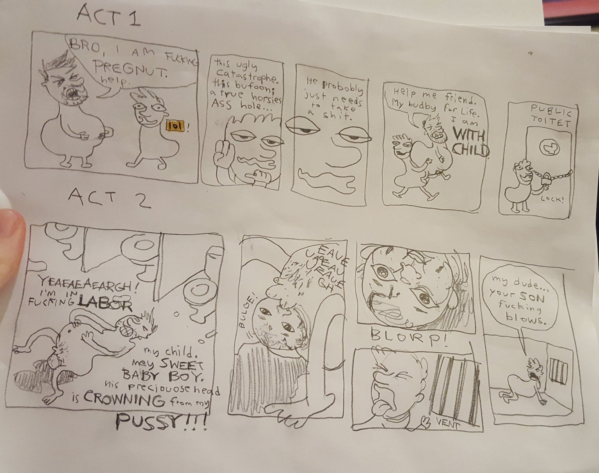

Skaianet Systems
On December 26 2018, WhatPumpkin deleted their tumblr account. In the early mornings of New Years Day, they also wiped their twitter. From the ashes rose Skaianet Systems, a rebranding of their twitter and a new website redirected from whatpumpkin.com.
The site, hosted at www.skaianetsystems.com, appears as an in-universe website for Skaianet, with a map of meteor strike locations, a countdown to 4/13/29, and links to Hiveswap and Friendsim. By viewing the source code a number of hidden links could be found, all commented out with instructions to remove them before the site went live. The hidden links, currently removed at the time of writing this, are mirrored below with their contents.
On January 2nd "following assets..." section was replaced with a lengthy apology to the fans regarding the content within the hidden links.

If you read them, please keep the context of the apology in mind.
Homestuck.net note: I have temporarily archived this Homestuck.info page until the original site goes back up online.
Hidden Links
APOPHIS
An image of a sample of Pyrolusite, which makes up the meteor Apophis, found at http://skaianetsystems.com/SAMPLES/APOPHIS/. Apophis is a real-life meteor set to hit or nearly miss Earth on 4/13/29. The countdown on Skaianet is counting down to this exact moment. According to the lore, this meteor causes the flooding of Earth in the Post-Scratch Universe
Dark Web Cache
A zip file containing 10 jpg images depicting various wizards and a readme.txt file explaining the blockchain-related virus embedded within them. This is all a refence to a real-life event where Hussie downloaded a zip file of shitty wizard images to use in Rose's house, only to have his entire computer succumb to a terrible virus.
LEGACY
An image of Colonel Sassacre, aka Mark Twain, the founder of Skaianet. Found at the secret link http://skaianetsystems.com/LEGACY/.
REBIRTH
A NSFW comic of SBAHJ, depicting Sweet Bro giving birth. Found at the secret link http://skaianetsystems.com/ILLEGAL/BANISHED_RESOURCES/.
HISTORY
A set of 36 txt files detailing the history of Skaianet and HIC throughout both the Pre-Scratch and Post-Scratch Universes. Archived here: